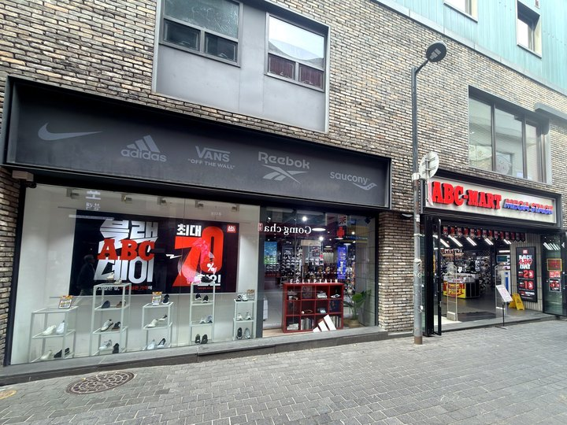

9:41
●●● 📶 🔋
‹
帖子
经验
今天 11:08
明洞药妆店怎么走比较方便
鹿
小鹿去首尔
会员
12 月首次自由行
＋ 关注
✉️ 私聊
第一次来明洞，想问一下从乙支路入口出来，走到常见的药妆店大概怎么走、要走多久。欢迎走过的朋友在站内说一声，谢谢。

🤍 点赞 6
分享
🚩 举报
评论 2
周
周周
往南走大约 200 米，右手边就能看到。
今天 12:10
珉
珉秀
路口人多，出来先看地面导向再走会清楚一些。
今天 13:02
🏠
首页
🚇
地铁
💬
翻译
🧭
韩友圈
☰
全部
👤
我的